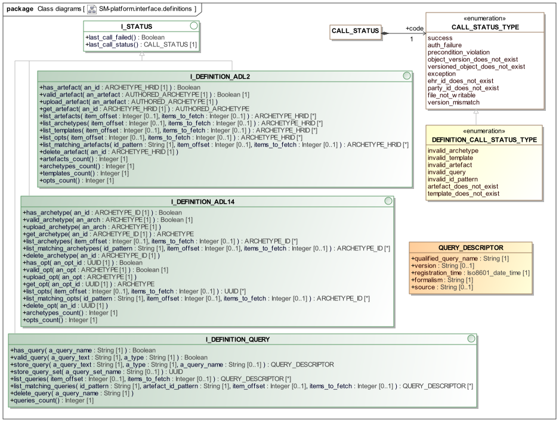

Definition Package
Overview
The platform.interface.definitions package shown below defines service interface to the definitions component in the logical platform architecture.

sm.platform.interface.definitions packageThe interfaces provided in this service are designed to enable any model-like or reference artefacts, other than terminology, to be stored for use by the rest of the system. This includes archetypes, templates, queries, and query sets.
Archetypes and Templates
The I_DEFINITION_ADL14 and I_DEFINITION_ADL2 interfaces are provided to enable upload, updating and removal of archetypes and templates based on the ADL 1.4 and ADL 2 standards respectively, for use in an operational system.
In the ADL2 case, archetypes and 'templates' are all instances of archetypes, formally speaking, which means that both source artefacts and Operational Templates (OPTs) can be uploaded. All such artefacts are identified in the same way, via an Archetype human-readable identifier (ARCHETYPE_HRID) and a UUID.
For ADL 1.4, 'templates' are distinct artefacts, and the service enables the upload of source archetypes and ADL 1.4 - based OPTs, which are XML artefacts. In ADL 1.4, archetypes are identified with the older ARCHETYPE_ID, while OPTs are identified with UUIDs.
Registered Queries
Queries may be registered in the system for later execution. They are identified by 'qualified names', i.e. String names that may include a namespace and optionally a formalism type. The following schemes may be used:
-
<namespace>::<query-name> -
<namespace>::<formalism>::<query-name>
Examples:
-
"ehr::all_influenza_vacc_candidates"— a query for candidates for influenza vaccination -
"demographic::inpatients_rns"— a demographic query for current in-patients of RNS hospital -
"task_planning::aql::chemotherapy_plans"— an AQL query for chemotherapy plans
If no namespace is supplied, the namespace "misc" is assumed.
Query Formalism
A stored or ad hoc query text has an associated formalism, i.e. query language, provided in the a_type parameter in various calls. This parameter is a string value, treated case-insensitively carrying the name of the formalism of the query text, with an optional version identifier separated by the '::' delimiter. The version identifier may be:
-
a semver.org partial or full version string, such as "1", "1.0", "1.0.3"; OR
-
any text value, for non-computable version identifiers.
If no version identifier part is supplied, the major version "1" is assumed.
Accordingly, the following values for the type parameter are all equivalent:
-
"AQL"
-
"aql"
-
"AQL::1"
Class Definitions
Unresolved include directive in modules/openehr_platform/pages/definition_package.adoc - include::ROOT:partial$classes/i_definition_adl2.adoc[]
Unresolved include directive in modules/openehr_platform/pages/definition_package.adoc - include::ROOT:partial$classes/i_definition_adl14.adoc[]
Unresolved include directive in modules/openehr_platform/pages/definition_package.adoc - include::ROOT:partial$classes/i_definition_query.adoc[]
Unresolved include directive in modules/openehr_platform/pages/definition_package.adoc - include::ROOT:partial$classes/definition_call_status_type.adoc[]
Unresolved include directive in modules/openehr_platform/pages/definition_package.adoc - include::ROOT:partial$classes/query_descriptor.adoc[]